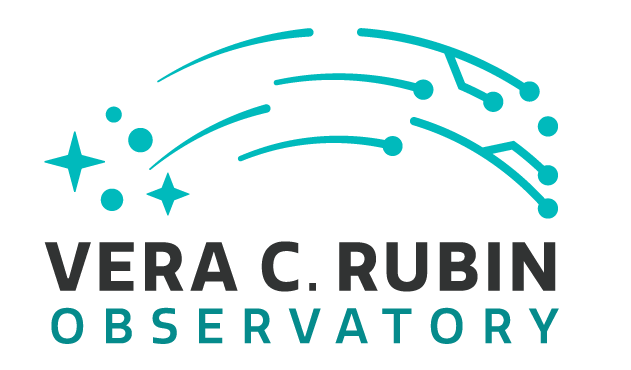
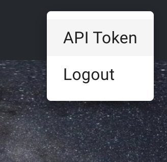
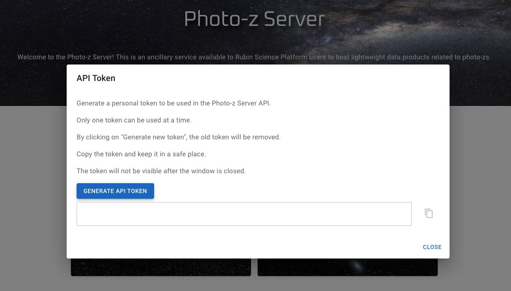

Photo-z Server
Tutorial Notebook
Contact author: Julia Gschwend
Last verified run: 2024-Dec-11
The PZ Server
Introduction
The PZ Server is an online service available for the LSST Community to host and share lightweight photo-z (PZ) -related data products. The upload and download of data and metadata can be done at the website pz-server.linea.org.br (during the development phase, a test environment is available at pz-server-dev.linea.org.br). There, you will find two pages containing a list of data products each: one for Rubin Observatory Data Management’s official data products and the other for user-generated data products. The registered data products can also be accessed directly from Python code using the PZ Server’s data access API, as demonstrated below.
The PZ Server is developed and delivered as part of the in-kind contribution program BRA-LIN, from LIneA to the Rubin Observatory’s LSST project. The service is hosted in the Brazilian IDAC, not directly connected to the Rubin Science Platform (RSP). However, user authorization requires the same credentials as RSP. For comprehensive documentation about the PZ Server, please visit the PZ Server’s documentation page. There, you will also find an overview of all LIneA’s contributions related to the PZ production. The internal documentation of the API functions is available on the API’s documentation page.
How to upload a data product on the PZ Server website
To upload a data product, click the button NEW PRODUCT on the top left of the User-generated Data Products page and fill in the Upload Form with relevant metadata. Alternatively, the user can programmatically upload files to the PZ Server via the pzserver Python Library (described below).
How to download a data product from the PZ Server website
To download a data product available on the Photo-z Server, go to one of the two pages by clicking on the card “Rubin Observatory PZ Data Products” (for official products released by Rubin Data Management Team) or “User-generated Data Products” (for products uploaded by the members of LSST community). The download button is on the right side of each data product (each row of the list). Also, there are buttons to share, remove, and edit the metadata of a given data product.
The PZ Server API (Python library pzserver)
Installation
The PZ Server API is avalialble on pip as pzserver. To install the API and its dependencies, type on the Terminal:
$ pip install pzserver
Or in a notebook code cell:
[ ]:
#! pip install pzserver
OBS: Depending on your Jupyter Lab version, you might need to restart the kernel to incorporate the new library.
Imports and Setup
[ ]:
from pzserver import PzServer
import matplotlib.pyplot as plt
%reload_ext autoreload
%autoreload 2
The connection with the PZ Server from Python code is done by an object of the class PzServer. To get authorization to define an instance of PzServer, the users must provide an API Token generated on the top right menu on the PZ Server website (during the development phase, on the test environment).


[ ]:
# pz_server = PzServer(token="<your token>", host="pz-dev") # "pz-dev" is the temporary host for test phase
For convenience, the token can be saved as token.txt (which is already listed in the .gitignore file in this repository).
[ ]:
with open('token.txt', 'r') as file:
token = file.read()
pz_server = PzServer(token=token, host="pz-dev") # "pz-dev" is the temporary host for test phase
How to get general info from PZ Server
The object pz_server created above can provide access to data and metadata stored in the PZ Server. It also brings additional methods for users to navigate through the available content. The methods with the prefix get_ return the result of a query on the PZ Server database as a Python dictionary and are most useful to be used programmatically (see details on the API documentation page). Alternatively, those with the prefix
display_ show the results as a styled Pandas DataFrames, optimized for Jupyter Notebook (note: column names might change in the display version). For instance:
Display the list of product types supported with a short description;
[ ]:
pz_server.display_product_types()
Display the list of users who uploaded data products to the server;
[ ]:
pz_server.display_users()
Display the list of data releases available at the time;
[ ]:
pz_server.display_releases()
Display all available data products (WARNING: This list can rapidly grow during the survey’s operation).
[ ]:
pz_server.display_products_list()
The information about product type, users, and releases shown above can be used to filter the data products of interest for your search. For that, the method list_products receives as an argument a dictionary mapping the product’s attributes to their values.
[ ]:
pz_server.display_products_list(filters={"release": "LSST DP0.2",
"product_type": "Training Set"})
It also works if we type a string pattern that is part of the value. For instance, just “DP0” instead of “LSST DP0.2”:
[ ]:
pz_server.display_products_list(filters={"release": "DP0"})
It also allows the search for multiple strings by adding the suffix __or (two underscores + “or”) to the search key. For instance, to get spec-z catalogs and training sets in the same search (notice that filtering is not case-sensitive):
[ ]:
pz_server.display_products_list(filters={"product_type__or": ["Spec-z Catalog", "training set"]})
To fetch the results of a search and attribute to a variable, just change the prefix display_ by get_, like this:
[ ]:
search_results = pz_server.get_products_list(filters={"product_type": "results"})
search_results
How to upload a data product to via Python API (alternative method)
As shown above, the default method to upload a data product to the PZ Server is the upload tool on the PZ Server website. Alternatively, the pzserver Python library can send data products to the host service.
First, prepare a dictionary with the relevant information about your data product:
[ ]:
data_to_upload = {
"name":"example upload via lib",
"product_type": "specz_catalog", # Product type
"release": None, # LSST release, use None if not LSST data
"main_file": "example.csv", # full path
"auxiliary_files": ["example.html", "example.ipynb"] # full path
}
[ ]:
upload = pz_server.upload(**data_to_upload)
[ ]:
upload.product_id
How to display the metadata of a data product
The metadata of a given data product is the information the user provides on the upload form. This information is attached to the data product contents and is available for consulting on the PZ Server page or using this Python API (pzserver).
All data products stored on PZ Server are identified by a unique id number or a unique name, a string called internal_name, which is created automatically at the moment of the upload by concatenating the product id to the name given by its owner (replacing blank spaces by “_”, lowering cases, and removing special characters).
The PzServer’s method get_product_metadata() returns a dictionary with the attibutes stored in the PZ Server about a given data product identified by its id or internal_name. For use in a Jupyter notebook, the equivalent display_product_metadata() shows the results in a formated table.
[ ]:
# pz_server.display_product_metadata(<id (int or str) or internal_name (str)>)
# pz_server.display_product_metadata(6)
# pz_server.display_product_metadata("6")
pz_server.display_product_metadata("6_simple_training_set")
back to the top
How to download data products as .zip files
To download any data product stored in the PZ Server, use the PzServer’s method download_product informing the product’s internal_name and the path to where it will be saved (the default is the current folder). This method downloads a compressed .zip file, which contains all the files uploaded by the user, including data, ancillary files, and description files. The time spent downloading a data product depends on the internet connection between the user and the host. Let’s try it
with a small data product.
[ ]:
pz_server.download_product(14, save_in=".")
How to retrieve contents of data products (work on memory)
The pzserver library allows users to retrieve the contents of a given data product to work on memory using the method get_product(). This feature is available only for tabular data (product types: Spec-z Catalog and Training Set).
By default, the method get_product returns an object from a particular class, depending on the product’s type. The classes SpeczCatalog and TrainingSet are simple extensions of pandas.DataFrame (via class composition) with a couple of additional attributes and methods, such as the attribute metadata, and the method display_metadata(). Let’s see an example:
[ ]:
catalog = pz_server.get_product(8)
catalog
[ ]:
catalog.display_metadata()
The tabular data is allocated in the attribute data, a pandas.DataFrame.
[ ]:
catalog.data
[ ]:
type(catalog.data)
It preserves the useful methods from pandas.DataFrame, such as:
[ ]:
catalog.data.info()
[ ]:
catalog.data.describe()
For those who prefer working with astropy.Table or pure pandas.DataFrame, the method get_product() gives the flexibility to choose the output format (fmt="pandas" or fmt="astropy").
[ ]:
dataframe = pz_server.get_product(8, fmt="pandas")
print(type(dataframe))
dataframe
[ ]:
table = pz_server.get_product(8, fmt="astropy")
print(type(table))
table
Next, let’s explore specific features for each product type…
Spec-z Catalogs
In the context of the PZ Server, Spec-z Catalogs are defined as any catalog containing spherical equatorial coordinates and spectroscopic redshift measurements (or, analogously, true redshifts from simulations). A Spec-z Catalog can include data from a single spectroscopic survey or a combination of data from several sources. To be considered a single Spec-z Catalog, the data should be provided as a single file to PZ Server’s upload tool. For multi-survey catalogs, adding the survey name or identification as an extra column is recommended.
Mandatory columns: * Right ascension [degrees] - float * Declination [degrees] - float * Spectroscopic or true redshift - float
Recommended columns: * Spectroscopic redshift error - float * Quality flag - integer, float, or string * Survey name (recommended for compilations of data from different surveys)
Let’s see an example of Spec-z Catalog:
[ ]:
gama = pz_server.get_product(14)
[ ]:
gama.display_metadata()
The attribute data, which is a DataFrame preserves the plot method from Pandas.
Display basic statistics
[ ]:
gama.data.describe()
[ ]:
gama.data.plot(x="RA", y="DEC", kind="scatter")
[ ]:
gama.data.hist('Z')
Training Sets
In the context of the PZ Server, Training Sets are defined as the product of matching (spatially) a given Spec-z Catalog (single survey or compilation) to the photometric data, in this case, the LSST Objects Catalog. The PZ Server API offers a Training Set Maker tool that allows users to build customized Training Sets based on the available Spec-z Catalogs (details below).
Note 1: Training sets are commonly split into two or more subsets for photo-z validation purposes. If the Training Set owner has previously defined which objects should belong to each subset (training and validation/test sets), this information must be available as an extra column in the table or as clear instructions for reproducing the subset separation in the data product description.
Note 2: The PZ Server only supports catalog-level Training Sets. Image-based Training Sets, e.g., for deep-learning algorithms, are not supported yet.
Mandatory column: * Spectroscopic (or true) redshift - float
Other expected columns * Object ID from LSST Objects Catalog - integer * Observables: magnitudes (and/or colors, or fluxes) from LSST Objects Catalog - float * Observable errors: magnitude errors (and/or color errors, or flux errors) from LSST Objects Catalog - float * Right ascension [degrees] - float * Declination [degrees] - float * Quality Flag - integer, float, or string * Subset Flag - integer, float, or string
For example:
[ ]:
train_goldenspike = pz_server.get_product(9)
[ ]:
train_goldenspike.display_metadata()
Display basic statistics
[ ]:
train_goldenspike.data.describe()
[ ]:
train_goldenspike.data.hist('redshift', bins=20)
[ ]:
train_goldenspike.data.hist('mag_i_lsst', bins=20)
Training and Validation Results
The results of training or validating PZ algorithms can not be loaded into memory directly but can be downloaded to the local work directory.
[ ]:
pz_server.download_product("182_example_tpz_training_results", save_in=".")
PZ Server Pipelines (under development)
Spec-z Catalogs and Training Sets can be created using the cross-matching pipelines available on the PZ Server. Any catalog built by the pipeline is automatically registered as a regular user-generated data product and is the same as the uploaded ones.
User feedback
Is something important missing? Click here to open an issue in the PZ Server library repository on GitHub.